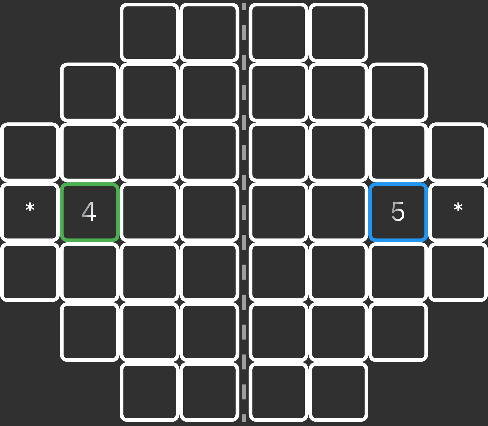

Splitter is a roll-and-write game designed by Stefan Nikolic. The game can be played with any number of players but the Trickster's Table implementation only allows solo play.
Supporters whose donations funded the development of this game (thank you!):
You roll two dice each turn. The dice to be played will be displayed on the bottom of the screen. For example, this is what a 4 and 5 roll would look like:
One die's value must be placed on any unoccupied spot on the board. The value from the other die must be placed on the opposite side of the board as though there was a mirror running down the middle of the board. Tap on an empty spot on the board to place the dice and lock your move in by tapping the + symbol in the bottom right.
For example, if you roll a 4 and a 5 you may place them like this:
Or like this (or any other white square on the board for that matter)
The goal is to score as many points as possible. Points are scored when there are exactly as many of the value displayed on the dice in a cluster of orthoganally adjacent dice. When a cluster is worth points the background color will fill in.
For example, each 1 by itself will score one point (the total score for this board is 2 points):
However, if two 1s are next to each other they are worth 0 points:
Two 2s score 2 points, and three 3s score 3 points, and four 4s score 4 points, etc.
Any valid clusters that have a * square are worth double points.
On the B board type there are also squares marked with "s. If you put the same number in all boxes with a " you will receive 5 points. If you put a different number in one of the "s you will get 0 points for this bonus. The " will disappear to let you know this.